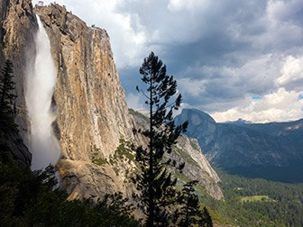

Hiking
A Variety of Trails!
Probably the best way to experience the grandeur of Yosemite National Park is by hiking or backpacking through it’s fields, forests, and paths. Every turn displays different natural wonders; each path brings you closer to the environment. With more than 800 miles of trails to explore, Yosemite National Park offers something for everyone from the beginning stroller to the expert trekker. Hiking in Yosemite is what you make it—whether it’s a 14-mile hike up 4,800 feet on the Half Dome trail, or a relaxing jaunt along the Cook’s Meadow Loop, Yosemite hiking is a journey you’ll not soon forget. YExplore Yosemite Adventures | Custom Guided Adventure Hikes, Nature Walks, and Photography Workshops in Yosemite National Park. Small group sizes guarantee a personalized experience with professional local guides.
Day hikes range from flat walks to robust climbs, with distances from the valley of under one mile (to Bridalveil Fall, easy) up to 17 miles (to Half-Dome, very strenuous). Visitors will see waterfalls, especially strong in the spring, glacial ravines, panoramic views, forests and meadows. You can also hike above the valley floor south in Wawona, where you will see covered bridges, open pine forest, and the Giant Sequoias Grove. Shuttle bus service is available for tired trekkers to return to Wawona from the Grove. From the nortern part of the park, you can visit Soda Springs, Cathedral Lakes and follow the John Muir Trail. Longer hikes lead to Tioga Pass and the High Sierra Camp.
Connecting Yosemite Valley and Glacier Point, 4-Mile climbs from the valley floor to the south rim at Glacier Point. This Yosemite hiking trip provides a postcard moment at every turn. If you are looking to capture a breath-taking view of Yosemite Falls, this is the trail you will want to be on. While completing this 4-mile hike, you will also get to take in sights like Yosemite Valley. If you make it to the end, you may even be able to buy yourself an ice cream at the Glacier Point cafeteria, which also sells other snacks and convenience items.
Hiking in Yosemite isn’t complete without getting some refreshment from waterfall spray, and this trail gives you two opportunities with access to Nevada and Vernal Falls. If you’re in the mood for a short jaunt, you should hike round trip to Vernal Falls. This will only set you back 3 miles. However, if you’re a hiking enthusiast, you should definitely try hiking to Nevada Falls, which is a 7 mile roundtrip trail. Aside from offering a few routes, the Mist Trail is regarded as Yosemite’s signature trail because it offers so many majestic views.
Yosemite Falls Hike
One of Yosemite's oldest historic trails (built 1873 to 1877), the Yosemite Falls Trail leads to the top of North America’s tallest waterfall, which rises 2,425 feet (739 m) above the Valley floor. This trail starts near Camp 4, along the Valley Loop Trail, and immediately begins its climb, switchback after switchback, through oak woodland. You will begin to climb above some trees and into exposed plateaus that offer you a glimpse of what's to come: great views of Yosemite Valley and its many iconic landforms. Do not stray off of the maintained path, as you will find steep drops adjacent to the trail.
If you make the one-mile, 1,000 foot climb (via dozens of switchbacks) to Columbia Rock, you will be rewarded with spectacular views of Yosemite Valley, Half Dome, and Sentinel Rock. From there, it is worth the time and energy to hike another 0.5 miles (0.8 km) (some of which is actually downhill!) to get a stunning view of Upper Yosemite Fall. Depending on the season, you may even feel the mist from the fall, which may be welcome respite after the tough climb.
Half Dome Hike
The 14- to 16-mile round-trip hike to Half Dome is not for you if you're out of shape or unprepared. You will be gaining elevation (for a total of 4,800 feet) most of your way to the top of Half Dome. Most would say the reward is worth the effort. Along the way, you'll see outstanding views of Vernal and Nevada Falls, Liberty Cap, Half Dome, and--from the shoulder and summit--panoramic views of Yosemite Valley and the High Sierra.
Most hikers take 10 to 12 hours to hike to Half Dome and back; some take longer. If you plan on hiking during the day, it's smart to leave around sunrise (or earlier) and then have a non-negotiable turn-around time. For instance, if you haven't reached the top of Half Dome by 3:30 pm, you will turn around. Check for sunrise and sunset times before you hike. Regardless, each person should carry a flashlight or headlamp with good batteries (hikers commonly struggle down the trail after dark because they don't have a flashlight). Although the trail is well marked, you should be prepared with a good topographic map and compass and know how to use them.
Plan a hike!
Hiking is an essential way to experience Yosemite National park! But make sure to prepare, for the sake of your own safety, as well as to ensure that you have the best possible time you can in the lush wilderness of the park!
- ©2019
- Website by Wyatt Homewood
-

-

-